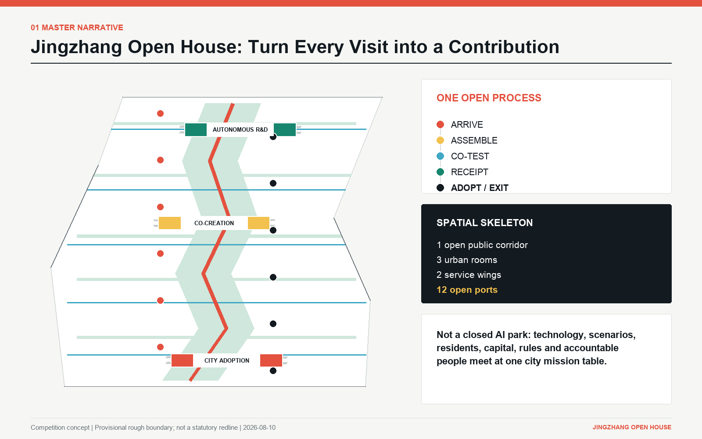
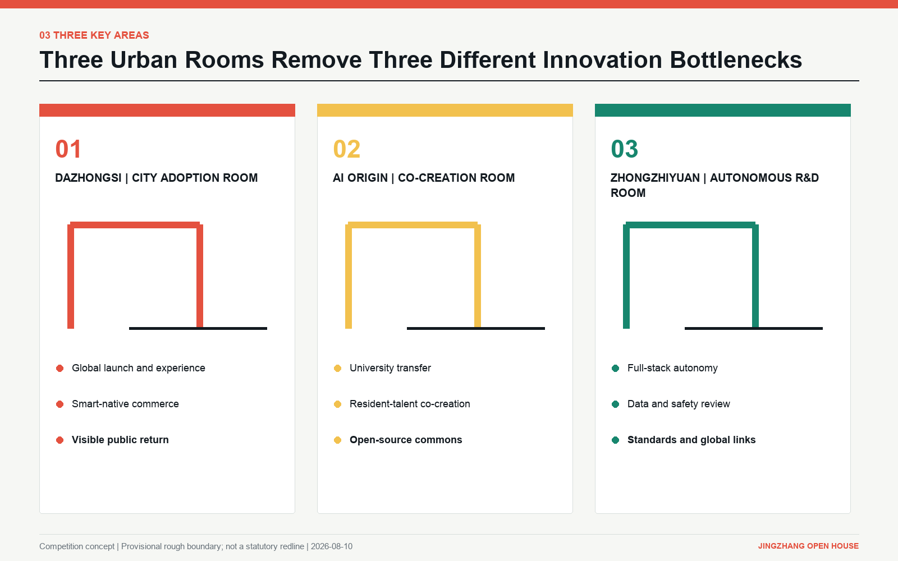

人才来了，但找不到真问题Talent arrives but cannot find a real problem
传统服务只解决住宿、政策与活动，没有把人才接入城市任务。Conventional soft-landing services solve logistics, not meaningful connection to civic missions.


把全球 AI 人才的一次到访，变成一次共同建设。Turn every visit by global AI talent into a shared act of city-making.
而是把技术、场景、居民、资本、规则与责任人请到同一张城市任务桌。It brings technology, real-world needs, residents, capital, rules and accountable people to one civic mission table.
京张缺的不是另一批科技展厅，而是一套把创新能力转成真实城市价值的公共协作机制。Jingzhang does not need another collection of technology showrooms. It needs a public mechanism that converts innovation capacity into real urban value.
传统服务只解决住宿、政策与活动，没有把人才接入城市任务。Conventional soft-landing services solve logistics, not meaningful connection to civic missions.
从实验室到城市应用之间，缺场景方、数据责任、公众验收与退出规则。Between lab and city lie missing users, data duties, public acceptance and exit rules.
部署量、模型量与活动人数不能证明居民、店员与创业者真正受益。Deployment counts and event traffic do not prove that residents, workers or founders benefit.
成功被包装，失败被删除，后来者又从头试错，公共知识无法累积。Success is marketed, failure disappears, and each new team repeats old mistakes.
以“任务”为城市创新的最小单元，以“回执”为公共价值的证据，以“采用或退出”代替永久性的技术许诺。Use the mission as the smallest unit of innovation, the receipt as evidence of public value, and adopt-or-exit decisions instead of permanent technology promises.
从世界级创新生态到一栋楼的首层接口，每个层级都回答不同的决策问题，但使用同一组责任与证据规则。From a global innovation ecosystem to a ground-floor interface, each scale answers a different decision while sharing one accountability and evidence contract.
回答京张如何连接全球人才、北京科技资源与京津冀创新协作。Connect global talent, Beijing's science assets and Jing-Jin-Ji innovation collaboration.
以一廊三室、两翼十二端口把产业、生活、公共空间和采用机制组织在一起。Organize industry, daily life, public space and adoption through one corridor, three rooms, two wings and twelve ports.
在众智园、AI 原点与大钟寺建立三个职能不同、协议互通的城市客厅。Establish three interoperable urban rooms in Zhongzhiyuan, AI Origin and Dazhongsi.
以上面积来自官方文本描述；当前 polygon 是赛事临时粗略范围，仅用于概念生成与相对比较，不作为法定红线、权属、文保、道路或工程依据。Areas come from official text. Current polygons are provisional competition geometry for concept generation and relative comparison only, never statutory, ownership, heritage, road or engineering evidence.
“开放之家”把空间结构、任务流程与公共责任叠合，让每个空间都知道自己在哪一个转化环节。Open House overlays spatial structure, mission flow and public accountability so every place knows its role in conversion.


低摩擦进入，并保留人工、无障碍与非数字通道。Low-friction entry with human, accessible and non-digital routes.
三间客厅分担验证、共创与采用，不重复建设。Three rooms divide validation, co-creation and adoption without duplication.
六席制把多方责任嵌入任务立项与转阶。A six-seat table embeds plural accountability into mission intake and gates.
用可追溯回执管理采用、限制、失败与公共收益。Trace adoption, limits, failure and public benefit through open receipts.
任何“世界级生态”都必须在一个具体任务中说清土地、空间、产业、资金、人才、算力、数据和场景如何被使用与退出。A world-class ecosystem must state how land, space, industry, capital, talent, compute, data and scenarios enter and leave each mission.
具名任务书、可复现评测、许可与责任边界、采用或退出决定。Named mission brief, reproducible evaluation, license and accountability boundary, adopt-or-exit decision.
可复用组件、失败知识、公共回执、组织网络和下一个问题。Reusable components, failure knowledge, public receipts, collaborative networks and the next question.
每个重点区都有不同的职能、空间序列、日夜节律、成功回执和红线，彼此不重复。Each key area has a distinct role, spatial sequence, daily rhythm, success receipt and red line.
企业不能只展示模型能力，必须同时公开用户问题、证据级别、责任人、限制与退出。Every launch must disclose the user problem, evidence level, accountable owner, limits and exit path.
店员、居民、物业和企业提交需要解决的服务断点。Workers, residents, operators and firms submit service gaps.
并行验证翻译、导购、无障碍和人工转接。Test translation, guidance, accessibility and human handoff together.
把有效、无效、争议和退出原因同时向公众展示。Show success, failure, controversy and exit reasons together.
高校、开发者、居民与创业者不在活动上短暂相遇，而是共同定义问题、数据边界、评估方法和维护人。Universities, developers, residents and founders jointly define the problem, data boundary, evaluation and maintainer.
将模糊诉求转成可测的问题基线与受影响人群。Turn vague needs into measurable baselines and affected groups.
同时确定技术路径、公共价值、数据边界与停止阈值。Set technology, public value, data boundary and stop threshold together.
把技术理解、风险沟通与维护贡献变成公共活动。Make technical literacy, risk dialogue and maintenance a public activity.
这里检验不只是性能，还包括数据来源、偏差、鲁棒性、人工接管、组件替代和维护责任。Validation covers provenance, bias, robustness, human takeover, component substitution and maintenance ownership.
先确定数据、算力、权限、到期日和责任人，再进入实验。Set data, compute, access, expiry and owner before experimentation.
性能、偏差、鲁棒性、维护与接管结果进入同一份报告。Performance, bias, robustness, maintenance and takeover share one report.
向专业团队和公众公开方法、限制、争议与下一轮问题。Publish method, limits, disputes and the next question.


场景不按技术品类组织，而是按城市行为组织：进入、共创、验证、采用、治理。Scenarios are organized by urban behavior, not technology category: enter, co-create, validate, adopt and govern.
一次对话获得任务、生活、规则与人工服务导航。One conversation opens mission, life, rules and human-service routes.
展示正在解决的问题、证据和限制，不做功能堆叠。Show problems, evidence and limits rather than feature accumulation.
同时测试翻译、导购、无障碍、店员使用与人工转接。Test translation, guidance, accessibility, worker use and human handoff.
居民提出问题、参与设定停止条件，并进入验收席位。Residents submit problems, set stop conditions and hold an acceptance seat.
儿童、家长与老人共同理解 AI 的能力、误差、风险与退出。Children, parents and older adults learn capability, error, risk and exit together.
把全球人才、教授、企业、场景方和社区组成一张任务桌。Convene global talent, professors, firms, users and community at one table.
把通过或失败的项目沉淀为代码、文档、方法与维护任务。Turn success and failure into code, documentation, methods and maintenance.
将专利、标准、开源许可、数据出境与市场路径并置会诊。Review patents, standards, open licenses, data and market route together.
并行验证性能、偏差、鲁棒性、人工接管与组件替代。Test performance, bias, robustness, human takeover and component substitution.
在用途、权限、价格、到期与替代方案清晰后匹配资源。Match resources after purpose, access, cost, expiry and alternatives are clear.
把避障、人工接管、慢行通行、遮荫与无障碍共同验收。Accept obstacle avoidance, takeover, slow mobility, shade and accessibility together.
只发布已经真实城市验证的成果，并同步公开限制与公共收益。Release only city-tested outcomes with limits and public benefit attached.


人才吸引不以“来了多少人”结束，而以一个人是否找到问题、伙伴、真实城市与可留下的成果来评价。Talent attraction is measured by access to problems, partners, a real city and work that remains, not arrival counts.
同时看见生活服务、规则、人工帮助与真实问题。See life support, rules, human help and real problems together.
获得问题基线、合作者、数据边界和下一步决定。Leave with baseline, partners, data boundary and next decision.
在真实使用者、人工责任和停止阈值下验证。Validate with real users, human ownership and stop thresholds.
贡献进入公共回执墙、开源仓库与下一个任务。Contribution enters the receipt wall, open repository and next mission.
“六席任务桌 + 五道转阶门 + 四季运营”构成长期机制，避免场景试验只在宣传日出现。Six seats, five evidence gates and four seasons keep scenarios alive beyond publicity days.
概念方案不给出投资额和工程承诺，而是给出“小步验证、证据过关、再扩空间”的实施逻辑。The concept avoids budget and engineering promises. It offers a test-small, pass-evidence, then-expand sequence.
验证“有没有真问题、能不能组齐六席、能不能产生公共回执”，而不是先做大体量新建。Test whether real problems, six accountable seats and public receipts can exist before large construction.
门框、人字轨迹与开放端点组成标识。它不仅出现在导视上，还要出现在准入状态、回执级别、维护责任与公共贡献上。The doorway, Ren-shaped rail and open nodes live not only on signs, but on access status, receipt level, maintenance and public contribution.
珊瑚红代表城市行动，铁路墨黑代表历史与责任，公共绿代表公共利益，协作黄代表共同建设，基础蓝代表可复核的城市底座。Coral marks action, rail black history and accountability, green public interest, yellow co-building and cyan a verifiable urban base.
不记录名人头衔，记录每项可核验的城市贡献、许可与维护人。Records verifiable contribution, license and maintainer rather than celebrity titles.
展示正在组队的真实问题、缺席位、证据级别与下一个决定。Shows live problems, missing seats, evidence level and next decision.
同时展示采用、失败、退出、受益分布与下一轮改进。Displays adoption, failure, exit, benefit distribution and next revision together.
GeoJSON 与 metrics 是权威数据层，图件和本页是解释层。不用美术数字取代计算，不用概念表达取代资料缺口。GeoJSON and metrics are authoritative; figures and this page explain them. Visual numbers never replace calculation, and concepts never conceal missing data.


所有空间、运营、品牌和政策建议均为竞赛概念建议，可供专业团队深化研究，不构成法定规划、政府审定、投资承诺或工程可行性结论。All spatial, operating, identity and policy ideas are competition concepts for professional development. They are not statutory planning, government approval, investment commitment or engineering feasibility conclusions.